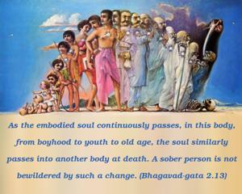
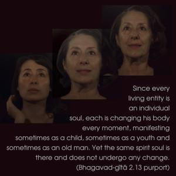
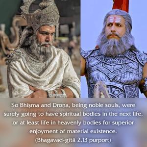
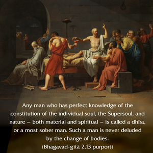

As the embodied soul continuously passes, in this body, from boyhood to youth to old age, the soul similarly passes into another body at death. A sober person is not bewildered by such a change.




Since every living entity is an individual soul, each is changing his body every moment, manifesting sometimes as a child, sometimes as a youth and sometimes as an old man. Yet the same spirit soul is there and does not undergo any change. This individual soul finally changes the body at death and transmigrates to another body; and since it is sure to have another body in the next birth – either material or spiritual – there was no cause for lamentation by Arjuna on account of death, neither for Bhīṣma nor for Droṇa, for whom he was so much concerned. Rather, he should rejoice for their changing bodies from old to new ones, thereby rejuvenating their energy. Such changes of body account for varieties of enjoyment or suffering, according to one’s work in life. So Bhīṣma and Droṇa, being noble souls, were surely going to have spiritual bodies in the next life, or at least life in heavenly bodies for superior enjoyment of material existence. So, in either case, there was no cause of lamentation.
Any man who has perfect knowledge of the constitution of the individual soul, the Supersoul, and nature – both material and spiritual – is called a dhīra, or a most sober man. Such a man is never deluded by the change of bodies.
The Māyāvādī theory of oneness of the spirit soul cannot be entertained, on the ground that the spirit soul cannot be cut into pieces as a fragmental portion. Such cutting into different individual souls would make the Supreme cleavable or changeable, against the principle of the Supreme Soul’s being unchangeable. As confirmed in the Gītā, the fragmental portions of the Supreme exist eternally (sanātana) and are called kṣara; that is, they have a tendency to fall down into material nature. These fragmental portions are eternally so, and even after liberation the individual soul remains the same – fragmental. But once liberated, he lives an eternal life in bliss and knowledge with the Personality of Godhead. The theory of reflection can be applied to the Supersoul, who is present in each and every individual body and is known as the Paramātmā. He is different from the individual living entity. When the sky is reflected in water, the reflections represent both the sun and the moon and the stars also. The stars can be compared to the living entities and the sun or the moon to the Supreme Lord. The individual fragmental spirit soul is represented by Arjuna, and the Supreme Soul is the Personality of Godhead Śrī Kṛṣṇa. They are not on the same level, as it will be apparent in the beginning of the Fourth Chapter. If Arjuna is on the same level with Kṛṣṇa, and Kṛṣṇa is not superior to Arjuna, then their relationship of instructor and instructed becomes meaningless. If both of them are deluded by the illusory energy (māyā), then there is no need of one being the instructor and the other the instructed. Such instruction would be useless because, in the clutches of māyā, no one can be an authoritative instructor. Under the circumstances, it is admitted that Lord Kṛṣṇa is the Supreme Lord, superior in position to the living entity, Arjuna, who is a forgetful soul deluded by māyā.